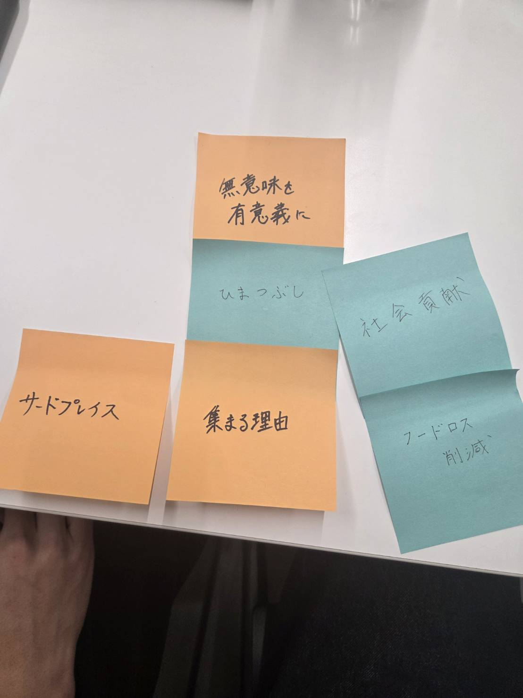
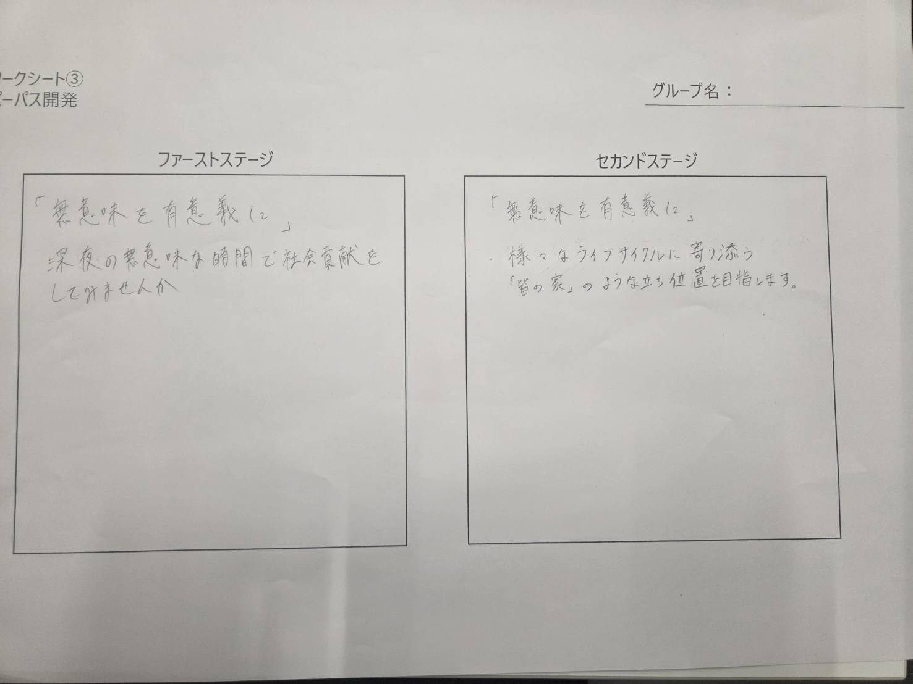

パーパスの設定
はじめ
自分たちは、24時間空いている無人サブスク性のラウンジを作ろうと考え、今回は
その企業のパーパス、理念を決めた。
アイデアだし
まずはパーパスのアイデアを出すために三人で話しながら色々考えていたのだが、話しているうちに
それぞれが思っていたプロジェクトのあり方がやや乖離している部分があることに気がついた。その
ポイントはラウンジで自分たちと似た境遇の顧客にターゲットを絞り快適な環境を提供することに注
力するのか、または環境問題と向き合い廃棄をうまく減らしていくことに力を入れるのか。もちろん
どちらも大切だし主要な活動内容だがそこの価値観は共有しておきたいためそれぞれどうしたいのか
意見を出してみた。その結果方向は何と無く見えたが、そこから端的で、明確で、それでいて自分た
ちの思いをのせられるパーパスはなんだろう。と言うところでドンずまった。そこで昔使ったポスト
イットを使いアイデアやワードを発散させてみた。
発散

一年の頃にやった発散と収束は正直なところ視覚化される分アイデア出しはしやすくなるがとりあえず
やってる感が否めなかった。だが今回自主的にやってみたらこれがなかなかうまくいき、想定よりも早
く良いパーパスに出会えた。

総括
今回は企業理念、土台について考えてみたが、改めてどの班も良かったし勉強になった。今までやっ
たものを使ってみるのも視点がひらけてなかなか良いなと思った。ここからもっと明確に、具体的に
広げて作り込んでいきたい。